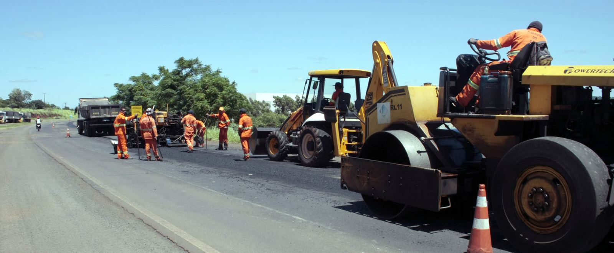

Publicidade
970 × 90320 × 100
Tema acompanhado
Pacto Brasil pela Infraestrutura
Proposta de 11 entidades empresariais e uma trabalhista para dobrar o investimento em infraestrutura e tirá-lo do calendário eleitoral.
Receber novidades deste tema4% do PIBmeta de investimento anual até 2030
60% do PIBestoque de infraestrutura até 2045
12entidades signatárias
Onde o Pacto está
- Nov 2025Lançamento por 12 entidades
- Nov 2026Um ano, poucos avanços concretos
- 2027Novo ciclo de governo
- 2030Investimento acima de 4% do PIB
- 2045Estoque em 60% do PIB
Cobertura do tema
 ReportagemUm ano depois, o Pacto ainda espera pelo futuroLançado para dobrar os aportes até 2030, o Pacto Brasil pela Infraestrutura completa aniversário travado por gargalos históricos e aposta no próximo ciclo de governo
ReportagemUm ano depois, o Pacto ainda espera pelo futuroLançado para dobrar os aportes até 2030, o Pacto Brasil pela Infraestrutura completa aniversário travado por gargalos históricos e aposta no próximo ciclo de governo PodcastInvestimento em infraestrutura deve ser política de EstadoPara o presidente do Sicepot-RS, reforma no sistema de contas públicas é uma das medidas para o desenvolvimento do setor
PodcastInvestimento em infraestrutura deve ser política de EstadoPara o presidente do Sicepot-RS, reforma no sistema de contas públicas é uma das medidas para o desenvolvimento do setor
ArtigoQuem decide o futuro da infraestrutura?O que o calendário eleitoral pode e não pode mudar na carteira de projetos do país Entrevista“A conta do frete ainda não fecha”Para a CNTA, endurecimento da lei traz avanços no registro de cargas, mas defasagem no diesel e fraudes ainda corroem a renda do autônomo
Entrevista“A conta do frete ainda não fecha”Para a CNTA, endurecimento da lei traz avanços no registro de cargas, mas defasagem no diesel e fraudes ainda corroem a renda do autônomoPublicidade
728 × 90320 × 100
Publicidade
970 × 90320 × 100